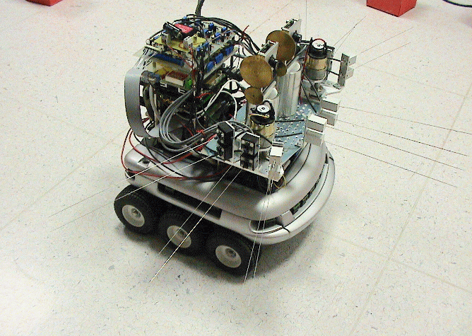
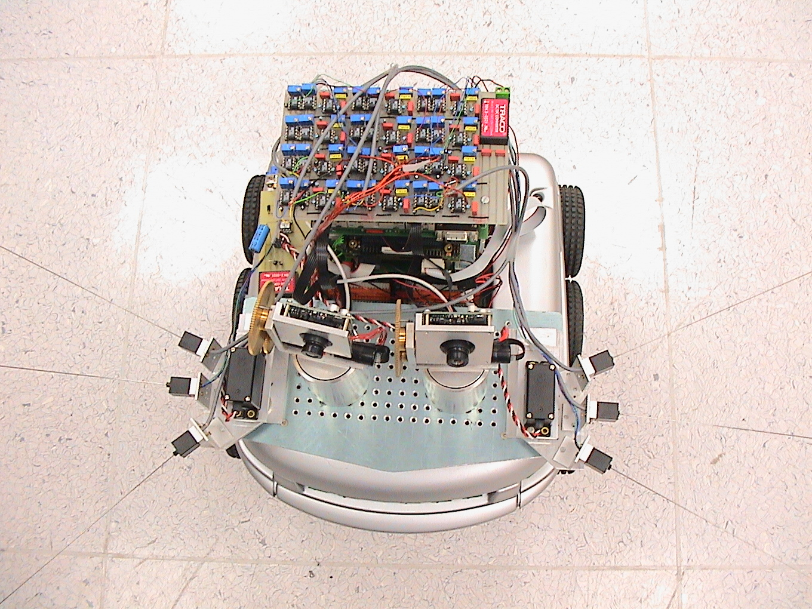

DaeEun Kim
Biological Cybernetics Lab
School of Electrical and Electronic Engineering
Yonsei University
50 Yonsei-ro Seodaemun-gu, Seoul, 03722, Republic of Korea
Tel: +82-2-2123-5879 (Office)
Fax: +82-2-393-4010 (Office)
Email: daeeun@yonsei.ac.kr
My research interests are
Biologically-Inspired Robots
Artificial Life, Autonomous Mobile Robots
Neural Networks
Complex Adaptive Systems
Machine Learning
Entomology and Insect Behavior
Works with Neuroethology
- Rodents
Multiple tactile sensors for whiskers
Texture discrimination and shape recognition
Tactile localization
Forward models
Whisker morphology
Visuo-tactile cross-modality
- Fireflies
Synchronization model of integrate-and-fire neurons
Pace maker system
Clustering model
- Desert Ants
Homing Navigation
Path Integration Model
- Honeybees
Dance communication of honeybees
Behavioural pattern and resource vector
- Elasmobranchs (Sharks, Rays)
Electroreception mechanism
Prey detection
Forward model
- Sand scorpions
Prey detection mechanism with vibration
Population codes
|  |
 |
| a robot with tactile whisker system |
Works with Cognitive Robotics
- Evolutionary computation on memory-based system
- Evolutionary computation with multi-objectives
- Evolutionary computation on planning process
- Neural mechanism of memory and learning
- Reinforcement learning in non-Markovian environment
- Dissertation
DaeEun Kim, "A Quantitative Approach to the Analysis of Memory Requirements for
Autonomous Agent Behaviours using Evolutionary Computation", PhD, University of Edinburgh, Edinburgh
DaeEun Kim, "Knowledge Acquisition based on Neural
Network Modeling", Directed Study Report, Master, The University of Michigan, Ann Arbor
DaeEun Kim, "Developing Hardware Description Language
for LISP machine",(Korean), Bachelor, Seoul National University, Seoul